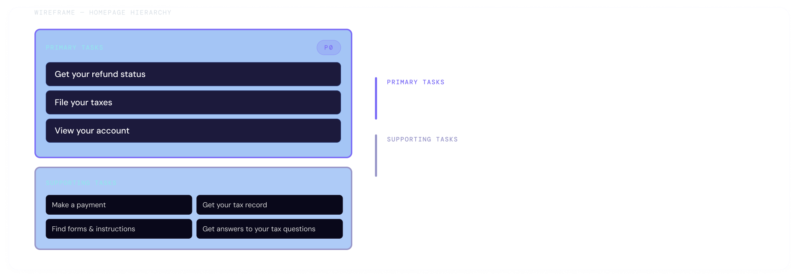
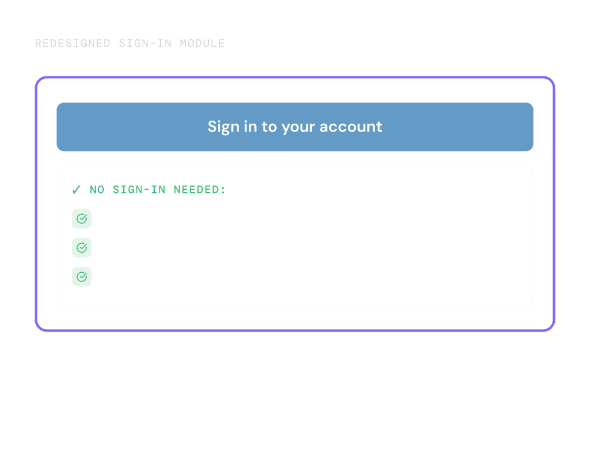
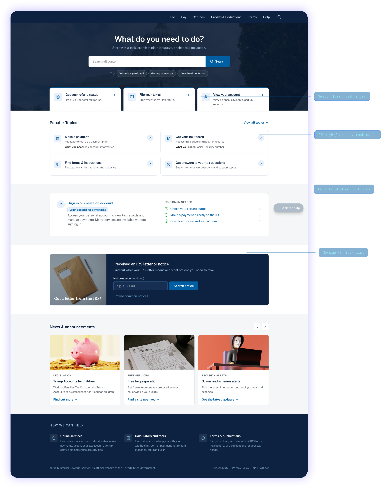
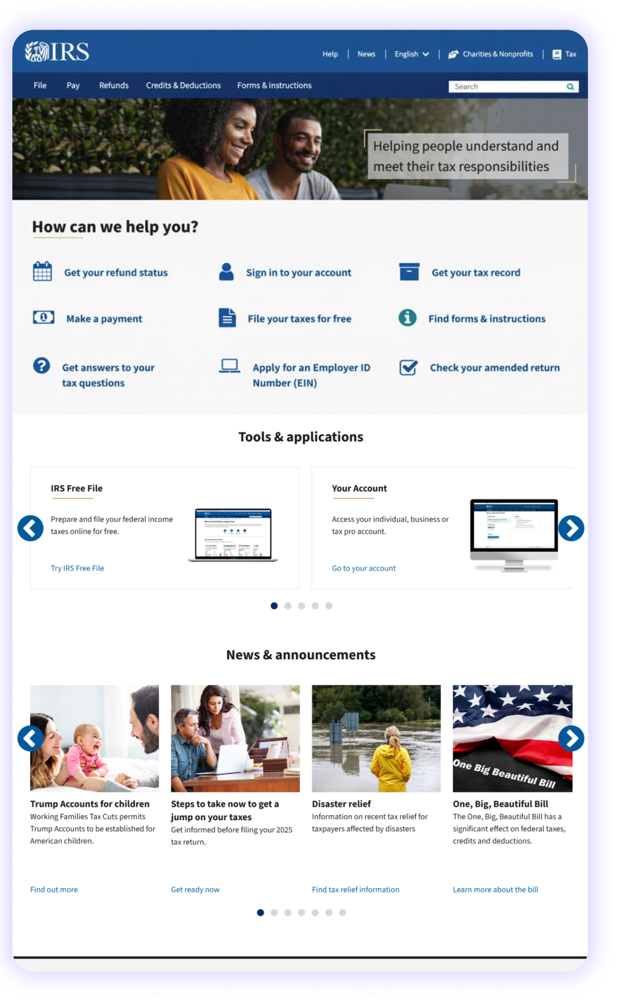
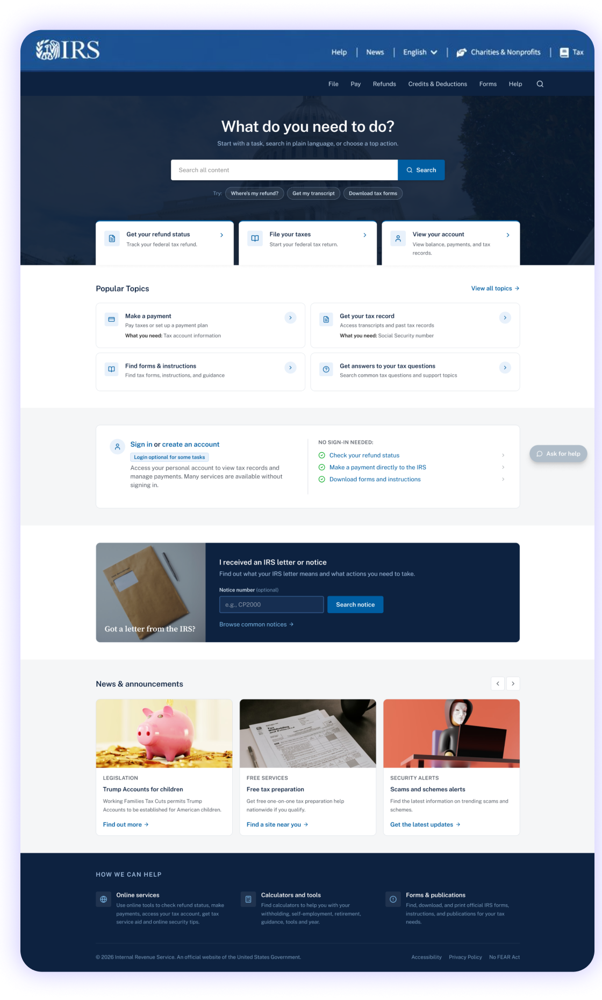

Deloitte Project
IRS.gov Homepage Redesign
Simplifying high-frequency tax service navigation for millions of Americans.

Simplifying high-frequency tax service navigation for millions of Americans.
01 — Overview
Target Users
U.S. taxpayers who self-serve on IRS.gov to file returns, track refunds, and manage their tax obligations.
Design Scope
Homepage information architecture, entry point hierarchy, and navigation clarity for high-frequency tasks.
My Role
UX Research, Information Architecture, Wireframing, Prototype testing, Before/After evaluation.
Service Scope
IRS.gov homepage serving over 150 million U.S. taxpayers annually across filing, refund tracking, and account management.
02 — Research
With seconds of landing on the page, users need to feel that IRS has the info tied to their priority goal.
FOR SENIORS
WAITING FOR MONEY
02 — Key Insight
The main issue isn't visibility. The issue is the judgment cost users face after seeing the options.
03 — Pain Points
Average task completion time (seconds)
DESIGN QUESTION
How might we help users quickly identify the correct next step among distributed and similar service entry points?
04 — Design Strategies
Prioritize 90 high-frequency tasks and create a clear homepage starting zone.
Surface the most common tax actions at the top — filing, refund tracking, and payment — so users immediately see the path relevant to their goal without scanning the full page.

Merge similar entry points to reduce comparison cost before the click.
Consolidate near-duplicate links (e.g. "File" vs "Free File" vs "File for Free") into a single labeled entry that explains the difference in one line, eliminating ambiguous side-by-side choices.

Help users decide whether sign in is required before entering a service path.
Show sign-in status context inline with entry points, so users know upfront what they will need and don't get blocked mid-task when they reach a login wall.

05 — Final Design
Redesigned homepage with a task-focused layout, merged entry points, and contextual sign-in guidance.

05 — Before / After


06 — Outcome
The redesign changed key user behaviors.
Users scanned less, committed to a path sooner, and reported higher confidence in their task direction.